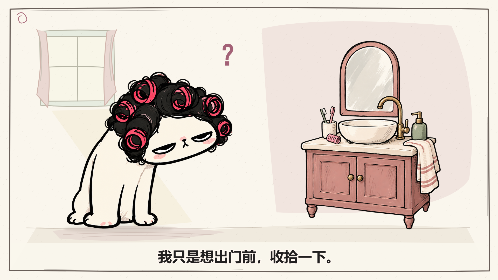
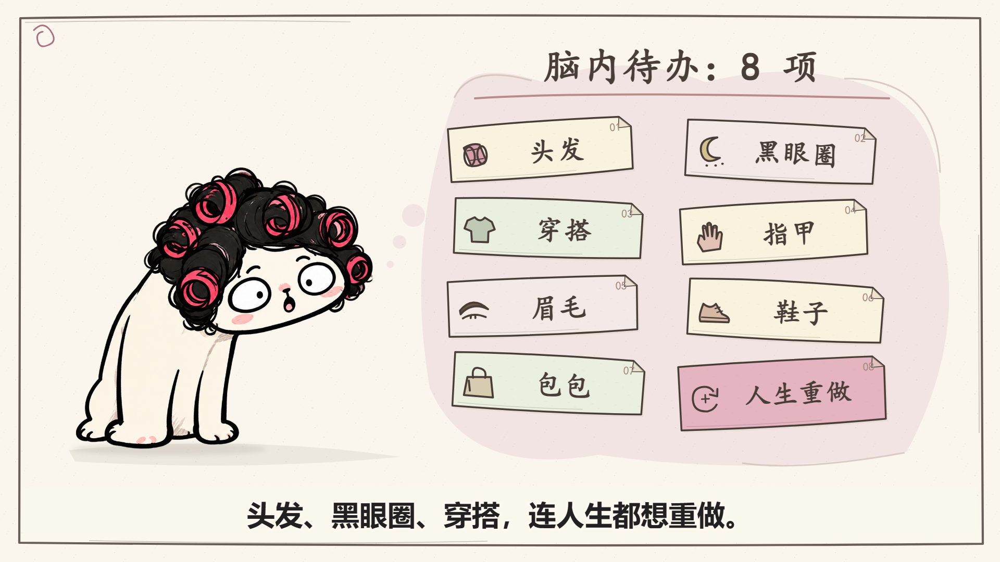
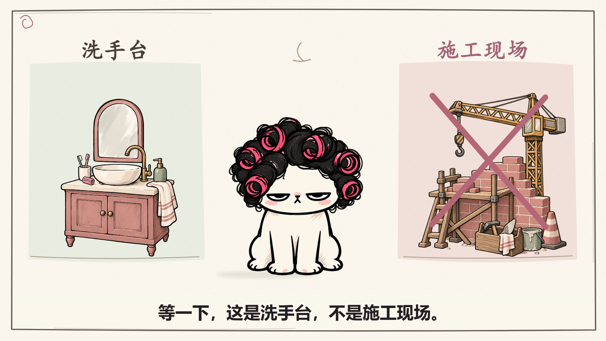
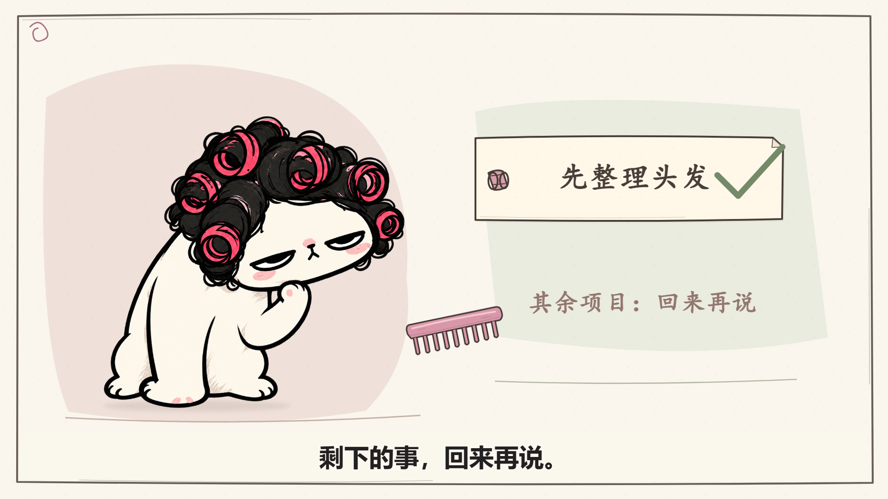
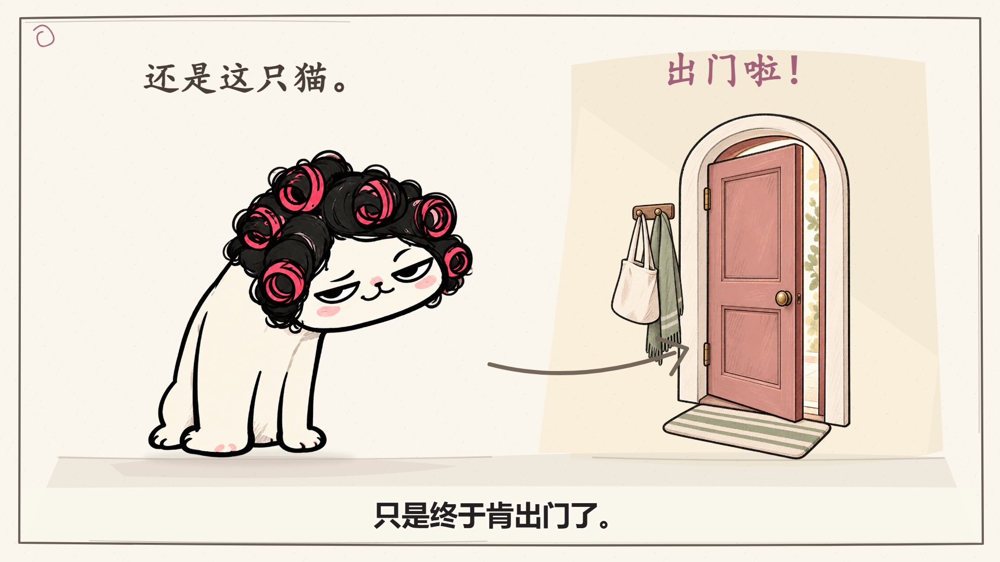

DEMO · 1.0 · 预计时间，未录音
原创视觉样片，未录音，时间均为预计；配音、配乐和音效由用户制作。真实录音对齐另用项目参考音频做技术测试。





| 段落/事件 | 完整口播 | 预计 / 实际时间 | 起始构图 | 画面变化与作用 | 素材与实现 |
|---|---|---|---|---|---|
| N01 / E01、E02、E03 | 我只是想出门前，收拾一下。 | 0.00–6.00s / 待录音 | 前2.4秒沿用猫的原绘出；其后纸感画框、窗光、地面、镜柜与洗手台共同建立梳妆角。 | E01 0.00s：同一猫母版逐步绘出；建立角色和情境〔direct〕 E02 2.40s：手绘镜柜、洗手台与房间基底一起出现；明确本段发生在出门准备时〔direct〕 E03 4.20s：一个问号出现；角色开始挑剔镜中自己〔reaction〕 | cat-start: 猫/sit，draw vanity-setup: props/style-v2/vanity.png，wipe question: ？，pop |
| N02 / E04、E05、E06、E07 | 结果一照镜子，脑子里开了八个项目。 | 6.00–9.50s / 待录音 | 猫仍在左侧；右侧柔和的脑内云团里，手绘清单纸签按原事件逐项累积，纸色和小图标统一。 | E04 6.00s：保持猫，第一张待办纸出现；把想法实体化〔metaphor〕 E05 7.00s：第二张待办加入；任务开始堆积〔metaphor〕 E06 8.00s：第三张待办加入，八个项目标签出现；点出夸张数量〔metaphor〕 E07 9.00s：第四张待办加入；维持积累而非换图〔metaphor〕 | cat-tasks: 猫/sit，none project-count: 脑内待办：8 项，pop task-title-rule: path，draw task1: shape，pop task1-label: 头发 task2: shape，pop task2-label: 黑眼圈 task3: shape，pop task3-label: 穿搭 task4: shape，pop task4-label: 指甲 |
| N03 / E08、E09、E10、E11 | 头发、黑眼圈、穿搭，连人生都想重做。 | 9.50–14.00s / 待录音 | 猫仍在左侧；右侧柔和的脑内云团里，手绘清单纸签按原事件逐项累积，纸色和小图标统一。 | E08 9.80s：第五张待办加入，猫改为惊讶；量变变成压力〔reaction〕 E09 10.60s：第六张待办加入；任务越列越多〔metaphor〕 E10 11.40s：第七张待办加入；准备范围继续扩大〔metaphor〕 E11 12.30s：第八张人生重做待办压轴出现；把普通整理升级到荒诞尺度〔contrast〕 | cat-tasks: 猫/sit，none task5: shape，pop task5-label: 眉毛 task6: shape，pop task6-label: 鞋子 task7: shape，pop task7-label: 包包 task8: shape，pop task8-label: 人生重做 |
| N04 / E12、E13、E14 | 等一下，这是洗手台，不是施工现场。 | 14.00–18.00s / 待录音 | 同一纸面中用鼠尾草与暖玫瑰两块淡色区比较洗手台和工地；素材均用统一的手绘墨线与填色。 | E12 14.00s：切正面猫和两种场景；打断无限扩大的任务〔reaction〕 E13 15.20s：洗手台标签出现；交代现实尺度〔direct〕 E14 16.20s：施工现场打叉；画面揭示荒诞反差〔contrast〕 | cat-interrupt: 猫/front sink-compare: props/style-v2/vanity.png，wipe crane: props/style-v2/construction.png，wipe sink-label: 洗手台，pop crane-label: 施工现场 cross: path，draw |
| N05 / E15、E16、E17 | 今天先选一件：把头发整理好。 | 18.00–22.50s / 待录音 | 玫瑰粉笔刷色块围住猫的近景，鼠尾草色块托住单张折角清单；保持已有抬爪姿态和梳子轨迹。 | E15 18.00s：真实抬爪姿态和一条任务；收束注意力〔direct〕 E16 19.40s：梳子进入角色手边；让整理成为具体动作〔direct〕 E17 21.00s：梳子经过卷发，完成勾画；一件事情有明确完成状态〔direct〕 | cat-groom: 猫/groom one-task: shape，pop one-label: 先整理头发 comb: props/style-v2/comb.svg，pop checkmark: path，draw |
| N06 / E18、E19 | 剩下的事，回来再说。 | 22.50–25.00s / 待录音 | 玫瑰粉笔刷色块围住猫的近景，鼠尾草色块托住单张折角清单；保持已有抬爪姿态和梳子轨迹。 | E18 22.50s：其他待办收起标签；为没处理的事情留下位置〔callback〕 E19 24.00s：梳子移开，保留完成状态；给结果留阅读与反应时间〔reaction〕 | cat-groom: 猫/groom later-label: 其余项目：回来再说，fade |
| N07 / E20、E21 | 看，我没变成另一只猫。 | 25.00–28.50s / 待录音 | 同一纸感房间和柔和窗光，猫保持原坐姿得意表情；新手绘门口、挂包围巾与地垫完成出门处境。 | E20 25.00s：原坐姿母版，得意表情；回扣原来的猫，而非换人〔callback〕 E21 27.00s：还是我标签出现；强调身份保持一致〔direct〕 | cat-end: 猫/sit door: props/style-v2/entry.png，wipe still-me: 还是这只猫。，pop |
| N08 / E22、E23 | 只是终于肯出门了。 | 28.50–32.00s / 待录音 | 同一纸感房间和柔和窗光，猫保持原坐姿得意表情；新手绘门口、挂包围巾与地垫完成出门处境。 | E22 28.50s：朝门方向画出箭头；把最后一句落到行动〔direct〕 E23 30.00s：出门啦字样出现；保留结束停留〔reaction〕 | cat-end: 猫/sit direction: path，draw done: 出门啦！，pop |
预计稿用于整体审阅；实际稿在录音对齐后复核关键动作和包袱时刻。